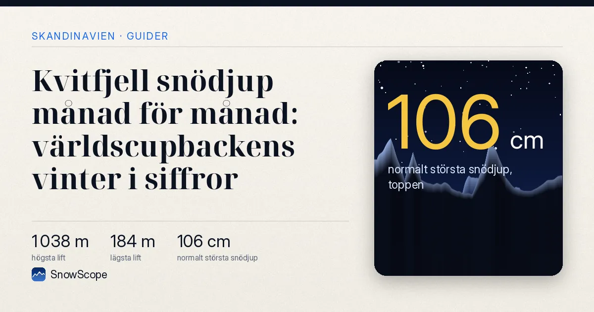

Kvitfjell snödjup månad för månad: världscupbackens vinter i siffror
Kvitfjell byggdes för OS-störtloppet och är fortfarande världscuparena för fartgrenarna varje vinter, så snön måste stämma på senvintern framför allt. Berget går från 184 till 1038 m med 38 km kartlagda nedfarter på 14 liftar. Vår snöhistorik från 46 vintrar visar ett stabilt inlandsmönster: sen start, djup mars och en lång svans in i våren på toppen.
Se snöprognosen för Kvitfjell live i SnowScope-appenSnödjup, pudervarningar och 3D-kartan, gratis.

Säsongsstart: första snön och de tunna veckorna
Mitt på berget (611 m) kommer första snön senast 15 oktober hälften av vintrarna. November är tunn, 22 cm mitt på, och botten på 184 m är mest bar med 19 cm. December ger första riktiga täcket: 47 cm nederst, 51 cm mitt på, 55 cm på toppen.
Januari till mars: fartmånaderna
Januari har 75 cm mitt på och 78 cm på toppen. Februari och mars är vinterns kärna, 82 och 84 cm mitt på, 86 och 90 cm på toppen.
Säkraste veckan mitt på berget är vecka 11, med vanligt djup 85 cm och minst 50 cm alla tidigare vintrar. Mitt på ligger 50 cm eller mer i 11 veckor nio vintrar av tio; vanligt vintermax där är 97 cm, mellan 66 och 136 cm.
Litet berg, stor botten
Ovanligt för Norge är botten nästan lika snörik som mitten: vanligt max 95 cm mot 97 cm mitt på. Dalen ligger i en kall ficka i Gudbrandsdalen. Toppen lägger på till 106 cm.
April och maj: vår högst upp
April visar fortfarande 86 cm på toppen och 74 cm mitt på ett vanligt år, nog för påskskidåkning.
Månad för månad på tre höjder
I december har en vanlig vinter 47 cm nederst (184 m), 51 cm mitt på berget (611 m) och 55 cm på toppen (1038 m). I januari har en vanlig vinter 72 cm nederst (184 m), 75 cm mitt på berget (611 m) och 78 cm på toppen (1038 m). I februari har en vanlig vinter 80 cm nederst (184 m), 82 cm mitt på berget (611 m) och 86 cm på toppen (1038 m).
I mars har en vanlig vinter 80 cm nederst (184 m), 84 cm mitt på berget (611 m) och 90 cm på toppen (1038 m). I april har en vanlig vinter 64 cm nederst (184 m), 74 cm mitt på berget (611 m) och 86 cm på toppen (1038 m).
En dålig vinter och en bra vinter
Spridningen betyder lika mycket som mitten. Mitt på berget hade nio av tio tidigare mars-månader minst 62 cm och en av tio 114 cm eller mer; på toppen går samma spridning från 70 till 117 cm.
Över hela vintern gick maxdjupet mitt på berget från 66 cm den sämsta vintern till 136 cm den bästa, kring vanliga 97 cm; på toppen från 69 till 137 cm kring 106 cm. Snö täckte marken mitt på berget i 208 dagar en vanlig vinter, och första snön lade sig där senast 15 oktober hälften av vintrarna.
Vad som ändrats på 46 vintrar
Toppens vanliga max gick från 106 cm de första 15 vintrarna till 97 cm de senaste 15; botten från 100 till 94 cm. Förra vintern toppade mitten på 80 cm.
Tips för skidåkare
- Slutet av februari och mars är veckorna att boka.
- December bygger på snökanoner nederst; naturlig snö högst upp.
- Djupen är en modell av tidigare vintrar för området, inte anläggningens mätningar; liftstatus på den officiella sidan.
Referenser och källor
- Wikipedia, 'Kvitfjell', hämtad 22 November 2026. sv.wikipedia.org/wiki/Kvitfjell
Om siffrorna
Liftar, backar och resväg: källorna nedan, kontrollerade på angivet datum.
Officiella lavinprognoser: Varsom (NVE)
Citera den här rapporten
För forskning, undervisning eller press: siffrorna och diagrammen får återanvändas fritt under CC BY 4.0 med den här källhänvisningen.
SnowScope (2026), Kvitfjell snödjup månad för månad: världscupbackens vinter i siffror, https://snowscope.app/blog/sv/2026/11/kvitfjell-snow-depth-world-cup-hill-by-month.html, hämtad 2026-11-22
SnowScope (Atlas Labs). (2026, November 22). Kvitfjell snödjup månad för månad: världscupbackens vinter i siffror. SnowScope snow reports. https://snowscope.app/blog/sv/2026/11/kvitfjell-snow-depth-world-cup-hill-by-month.html
BibTeX
@misc{snowscope2026kvitfjellsnowdepthworldc,
author = {{SnowScope (Atlas Labs)}},
title = {Kvitfjell snödjup månad för månad: världscupbackens vinter i siffror},
year = {2026},
month = nov,
howpublished = {\url{https://snowscope.app/blog/sv/2026/11/kvitfjell-snow-depth-world-cup-hill-by-month.html}},
note = {Published 2026-11-22 11:12 UTC; accessed 2026-11-22}
}· CC BY 4.0 · Metoder, data och verktyg →
Kvitfjell: snö och temperatur efter höjd, i vinter jämfört med förra (verktyg) →
Följ Kvitfjell
Gratis: ett meddelande när nysnö är på väg, och prognosen varje morgon.